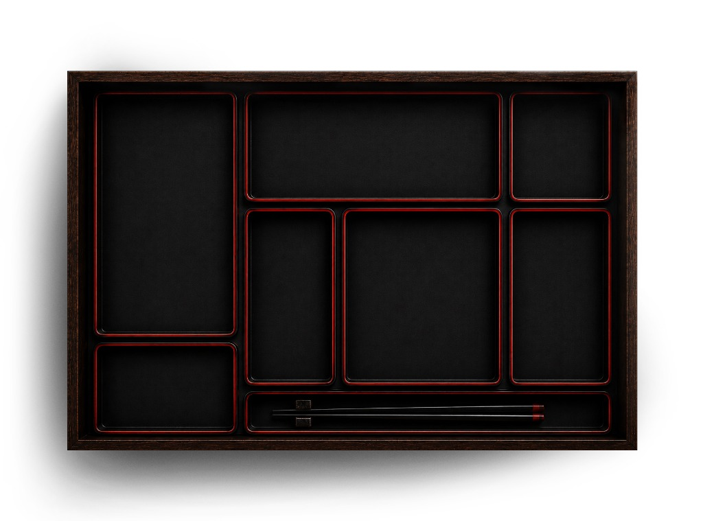

0%
Preparing the room
うま味の芸術に根ざした、現代的な日本料理。すべての料理に静かな精巧さが宿る。


01
中村 春人
With over three decades of mastery in Kyoto, Chef Nakamura brings a philosophy where the knife is an extension of the soul.
Haruto Nakamura
Head Chef
02
田中 陽菜
Honoring the source is the cornerstone of Chef Tanaka’s craft. From Tsukiji to local harvests, his role is to highlight nature’s perfection.
Hina Tanaka
Chef de Cuisine
03
佐藤 健司
For Chef Sato, dining is a silent conversation spoken through the medium of umami, bringing the serenity of Kyoto to life.
Kenji Sato
Senior Chef
Kyoto's minimal restraint meets the warmth of local teak, creating an atmosphere of quiet luxury.

Reserve your seat at YUI and allow us to prepare an evening designed around exceptional food, thoughtful service, and unforgettable moments. We confirm within 4 hours.

YUI · Modern Japanese · Bengaluru
We’ve got your table ready, — we can’t wait to see you.
Scan on arrival